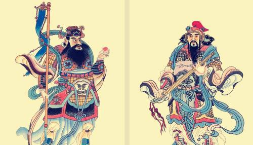
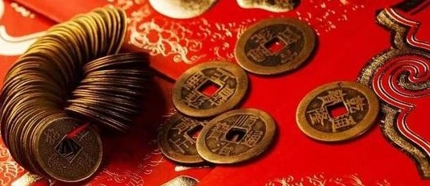

相传，在古时候，有个名叫万年的青年，看到当时节令很乱，就有了想把节令定准的打算。但是苦于找不到计算时间的方法，一天，他上山砍柴累了，坐在树阴下休息，树影的移动启发了他，他设计了一个测日影计天时的晷仪，测定一天的时间，后来，山崖上的滴泉启发了他的灵感，他又动手做了一个五层漏壶，来计算时间。天长日久，他发现每隔三百六十多天，四季就轮回一次，天时的长短就重复一遍。
当时的国君叫祖乙，也常为天气风云的不测感到苦恼。万年知道后，就带着日晷和漏壶去见皇上，对祖乙讲清了日月运行的道理。祖乙听后龙颜大悦，感到有道理。于是把万年留下，在天坛前修建日月阁，筑起日晷台和漏壶亭。并希望能测准日月规律，推算出准确的晨夕时间，创建历法，为天下的黎民百姓造福。
有一次，祖乙去了解万年测试历法的进展情况。当他登上日月坛时，看见天坛边的石壁上刻着一首诗：日出日落三百六，周而复始从头来。草木枯荣分四时，一岁月
有十二圆。
知道万年创建历法已成，亲自登上日月阁看望万年。万年指着天象，对祖乙说：“现在正是十二个月满，旧岁已完，新春复始，祈请国君定个节吧”。祖乙说：“春为岁首，就叫春节吧”。据说这就是春节的来历。
冬去春来，年复一年，万年经过长期观察，精心推算，制定出了准确的太阳历，当他把太阳历呈奉给继任的国君时，已是满面银须。国君深为感动，为纪念万年的功绩，便将太阳历命名为“万年历”，封万年为日月寿星。
传说篇 万年在中国古代神话中，相传有一个鬼域的世界，当中有座山，山上有一棵覆盖三千里的大桃树，树梢上有一只金鸡。每当清晨金鸡长鸣的时候，夜晚出去游荡的鬼魂必赶回鬼域。鬼域的大门坐落在桃树的东北，门边站着两个神人，名叫神荼、郁垒。如果鬼魂在夜间干了伤天害理的事情，神荼、郁垒就会立即发现并将它捉住，用芒
苇做的绳子把它捆起来，送去喂虎。因而天下的鬼都畏惧神荼、郁垒。于是民间就用桃木刻成他们的模样，放在自家门口，以避邪防害。后来，人们干脆在桃木板上
刻上神荼、郁垒的名字，认为这样做同样可以镇邪去恶。这种桃木板后来就被叫做“桃符”。
传说篇 神荼 桃符 郁垒 唐朝以后，除了以往的神荼、郁垒二将以外，人们又把
秦叔宝和尉迟恭两位唐代武将当作门神。相传，唐太宗生病，听见门外鬼魅呼号，彻夜不得安宁。于是他让这两位将军手持武器立于门旁镇守，第二天夜里就再也没有鬼魅搔扰了。其后，唐太宗让人把这两位将军的形象画下来贴在门上，这一习俗开始在民间广为流传。据说，大门上贴上两位门神，一切妖魔鬼怪都会望而生畏。
传说篇 秦叔宝 尉迟恭太古时期，有一种凶猛的怪兽，散居在深山密林中，人们管它们叫“岁”。它的形貌狰狞，生性凶残，专食飞禽走兽、鳞介虫豸，一天换一种口味，从磕头虫一直吃到大活人，让人谈“岁”色变。后来，人们慢慢掌握了“祟”
的活动规律，它是每隔三百六十五天窜到人群聚居的地方尝一次口鲜，而且出没的时间都是在天黑以后，等到
鸡鸣破晓，它们便返回山林中去了。
算准了“祟”肆虐的日期，百姓们便把这可怕的一年最后的一夜视为关口来煞，称作“年关”，并且想出了一整套过年关的办法：每到这一天晚上，每家每户都提前做好晚饭，熄火净灶，再把鸡圈牛栏全部拴牢，把宅院的前后门都封住，躲在屋里吃“年夜饭”，由于这顿晚餐具有凶吉未卜的意味，所以置办得很丰盛，除了要全家老小围在一起用餐表示和睦团圆外，还须在吃饭前先供祭祖先，祈求祖先的神灵保佑，平安地度过这一夜，吃过晚饭后，谁都不敢睡觉，挤坐在一起闲聊壮胆。
传说篇 守“祟” 传说“祟”还会摸小孩子的额头。当小孩子的额头被“祟”摸之后，小孩子便会吓哭起来，要么会变成傻子，要么会死去。后来人们知道祟怕光，就将八枚铜钱放在小孩子的枕头边，所以后来“祟”看到铜钱反射的光芒都被吓跑了，在也没有孩子被害了。这八枚铜钱，后来就演变成了压“祟”钱。
传说篇 压“祟”钱中国古时候有一种叫“年”的兽。“年”，头上长着角，非常凶猛恐怖。“年”长年居住深山，每到特定的一天(就是现在的除夕)才爬上岸，吞食牲畜伤害人命。因此，每到除夕这天，每个村里的人们全部逃往深山，以躲避“年”的伤害。
有一年除夕，从村外来了个乞讨的老人。乡里一片匆忙
恐慌，没有人理会他，只有村东头一位老婆婆给了老人些食物，并劝他快上山躲避“年”，那老人把胡子撩起来笑道：“婆婆若让我在家呆一夜，我一定把‘年’赶走。”老婆婆继续劝说，乞讨老人笑而不语。
半夜时分，“年”闯进村。它发现村里气氛与往年不同：村东头老婆婆家，门贴大红纸，屋内烛火通明。“年”浑身一抖，怪叫了一声。将近门口时，院内突然传来“噼里啪啦”的炸声，“年”吓得浑身发抖，再不敢往前凑了。原来，“年”最怕红色、火光和炸响。这时，婆婆的家门打开，只见院内一位身披红袍的老人在哈哈大笑。“年”大惊失色，狼狈逃蹿了。
第二天是正月初一，避难回来的人们见村里安然无恙，十分惊奇。这时，老婆婆才恍然大悟，赶忙向乡亲们述说了乞讨老人的许诺。这件事很快在周围村里传开了，人们都知道了驱赶“年”的办法。从此每年除夕，家家贴红对联、燃放爆竹;户户烛火通明、守更待岁。初一一大早，还要走亲串友道喜问好。
《元日》 王安石
爆竹声中一岁除，春风送暖入屠苏。
千门万户曈曈日，总把新桃换旧符。
【析】该诗描写新年元日热闹欢乐和万象更新的景象，取材民俗，敏感地摄取百姓过春节时的典型素材，抓住有代表性的生活细节：点爆竹，饮屠苏，换桃符，充分表现年节欢乐气氛，富有浓厚生活气息，抒发了作者革新政治的思想感情，充满积极向上的奋发精神。
《除夜雪》 陆游
北风吹雪四更初，嘉瑞天教及岁除。
半盏屠苏犹未举，灯前小草写桃符。
【析】作为一位爱国诗人，陆游感慨着这上天赐给我们的瑞雪正好在除夕之夜到来，兆示着来年的丰收。盛了半盏屠苏酒的杯子还没有来得及举起庆贺，他仍在灯下赶写着迎春的桃符。诗中各项春节民俗都以第一人称展现在我们眼前，这不仅是瑞兆，也是诗人对家国的一次祝福。
《除夜》 戴复古
扫除茅舍涤尘嚣，一炷清香拜九霄。
万物迎春送残腊，一年结局在今宵。
生盆火烈轰鸣竹，守岁筳开听颂椒。
野客预知农事好，三冬瑞雪未全消。
【析】戴复古的诗都充满了江湖的味道，这一首通过年节扫尘，爆竹，团圆饭等活动描写了春节景色。其中，作者还表达了一种万物复苏，粮食丰收的祝愿情感，一
只与东君偏故旧。
【析】莲花滴水送走了旧的一年。在井悬冻酒，晓寒侵人之时，柳枝的苗条身姿，已透露出了新春气息。虽有佳人歌女劝酒佐兴，可词人却为早春的物候所惊，犹如见到了久别重逢的故旧。构思新颖，饶有情致。
《元旦口占用柳亚子怀人韵》 董必武
共庆新年笑语哗，红岩士女赠梅花。
举杯互敬屠苏酒，散席分尝胜利茶。
只有精忠能报国，更无乐土可为家。
陪都歌舞迎佳节，遥祝延安景物华。
【析】这首诗从红岩村八路军办事处的同志围坐一起共度元旦的盛况写起。“笑语哗”可以想见当时的热烈情景。欢声笑语此起彼伏，一浪盖过一浪。这“笑语哗”体现出了革命者的英雄主义和乐观主义精神。“红岩士女赠梅花”则描述出宴会上同志们互赠梅花表达祝福的动人场景。
《元旦试笔（其二）》 陈献章
天上风云庆会时，庙谟争遣草茆知。邻墙旋打娱宾酒，稚子齐歌乐岁诗。
老去又逢新岁月，春来更有好花枝。晚风何处江楼笛，吹到东溟月上时。
【析】该诗为陈献章给东莞学生林光的一封信，在其中表达了“主静”思想，作者以茅龙之笔，写了春节间的风云变幻，老少齐乐，万物新生之景，是以生涩医甜熟，对枯峭医软弱。
诗词篇 喜乐（贰）《除夜宿石头驿》 戴叔伦
旅馆谁相问，寒灯独可亲。
一年将尽夜，万里未归人。
【析】长期飘泊，客中寂寞，又值除夕之夜，还独自滞迹在他乡逆旅，此情此景，更何以堪。这首诗以悲景衬悲情，虽是除夕也无比孤寂，真切地抒写了诗人当时的
际遇，蕴蓄着无穷的感慨和凄凉之情。
《思佳客·癸卯除夜》 吴文英
自唱新词送岁华。鬓丝添得老生涯。十年旧梦无寻处，几度新春不在家。
衣懒换，酒难赊。可怜此夕看梅花。隔年昨夜青灯在，无限妆楼尽醉哗。
【析】上片开头自唱两句，以此感叹自己的双鬓又添上了白发，而仍旧羁旅在外，不得返归故乡。下片“衣懒换”三句，写自己的生活潦倒，又生性疏狂。此言虽然现在是过大年，但是自己却无法添置新衣，所以索兴连旧衣也懒得换洗；又因为贫穷所以连酒也不能赊来借以
独酌守岁。那怎么办呢？只好折来些梅枝，用赏花来度过这漫漫除夕之夜吧。
《除夜》 文天祥
乾坤空落落，岁月去堂堂；末路惊风雨，穷边饱雪霜。
命随年欲尽，身与世俱忘；无复屠苏梦，挑灯夜未央。
【析】此诗作于元朝至元十八年，即公元1281年，是文天祥平生度过的最后一个除夕夜。这一首诗，诗句冲淡、平和，没有“天地有正气”的豪迈，没有“留取丹心照汗青”的慷慨，只表现出大英雄欲与家人共聚一堂欢饮屠苏酒过元旦的愿望，甚至字里行间中透露出一丝寂寞、悲怆的情绪。恰恰是在丹心如铁男儿这一柔情的刹那，反衬出勃勃钢铁意志之下人的肉身的真实性，这种因亲情牵扯萌发的“脆弱”，更让我们深刻体味了伟大的人性和铮铮男儿的不朽人格。
诗词篇 忧忡（壹）
《除夜作》 高适
旅馆寒灯独不眠，客心何事转凄然。
故乡今夜思千里，霜鬓明朝又一年。
【析】除夕之夜，诗人眼看外面家家灯火通明，欢聚一堂，而他却远离家人，身居客舍。两相对照，诗人触景生情，那盏有着光和热的灯也“寒”气袭人了，渲染了旅馆的清冷和诗人内心的凄寂。诗人“独不眠”又会想到一家团聚，其乐融融的守岁景象，更让其内心难耐。故看上去是写眼前景、眼前事，但是却处处从反面扣紧诗题，描绘出一个孤寂清冷的意境，人的孤寂凄然之感便
油然而生了。诗人并没有直接表达对故乡的思念，而是表达的更加含蓄委婉。“霜鬓明朝又一年”，“今夜”是除夕，明朝又一年，这漫漫无边的思念之苦，又要为诗人增添新的白发。诗人巧妙地运用“对写法”，把深挚的情思抒发得更为婉曲含蕴。
《新年作》 刘长卿
乡心新岁切，天畔独潸然。
老至居人下，春归在客先。
岭猿同旦暮，江柳共风烟。
已似长沙傅，从今又几年。
【析】诗人曾被贬南巴尉，身处异乡，却逢新年，伤感之情，油然而生。首联写情，新岁怀乡；颔联写景寓情，感叹春归我先；颈联即景生情，身处孤境悲愁；末联借贾谊自况，抒发贬谪悲愤。全诗抒情多于写景，无限离愁，跃然纸上。
《春思》 皇甫冉
莺啼燕语报新年，马邑龙堆路几千。
家住层城临汉苑，心随明月到胡天。
机中锦字论长恨，楼上花枝笑独眠。
为问元戎窦车骑，何时返旆勒燕然。
【析】该诗题为《春思》，大意是写一位出征军人的妻子。在明媚的春日里对丈夫梦绕魂牵的思念，以及对反侵略战争早日胜利的盼望。盛唐是社会相对安定的时
期，但边境战争却并未停息。前方将士与家乡亲人相互思念之情。仍然是诗人们吟咏的重要主题。这一类诗作总的来说具有较为深刻的社会意义，内容也较为充实。尤其首联对比鲜明，动人心弦。“莺啼燕语”，这是和平宁静的象征；新年佳节，这是亲人团聚的时辰。但是，另一方面，在那遥远的边关，从征的亲人却不能享受这宁静，无法得到这温情。
诗词篇 忧忡（贰）诗词，是阐述心灵的文学艺术，诗人词人则需要掌握成
熟的艺术技巧，并按照严格韵律要求，用凝练的语言、绵密的章法、充沛的情感以及丰富的意象来高度集中地表现社会生活和人类精神世界。
从古至今，佳篇之多，数不胜数。在这里，我们仅列出了部分诗词供诸君参考，从只言片语中，感受到过往春节的景色，并沉浸于词句的优美韵味之中。
诗词篇 总结“旧历的年底毕竟像年底，灰白的沉重的晚云中间时时发出闪光，接着一声钝响，是送灶的爆竹。近处燃放的可就更强烈了，震耳的 大音还没有息，空气里已经散满了幽微的火药香。”
正是在这最欢乐的时日里，祥林嫂却在讨饭中冻死在街头。强烈的对比，给人心灵的震撼是经久不息的。穷苦
“北京城外一里远，有个巨大的道士庙，叫白云观。由正月初一到十九，北京的男女老幼好多人去逛……男人举行徒步竞赛，女人有赛车，还有成群的人到那儿去
会‘神仙’……‘神仙’也许像大官儿，也许扮作乞丐，也许像狗，也许像驴。”
看来，春节庙会是老北京的特色民俗。如今，北京的龙潭庙会仍然是京城过年最热闹的去处，差不多每年都举行全国性的民俗表演和比赛活动。开封与龙潭庙会有缘分儿，前几年开封盘鼓队在龙潭庙会上大显身手，捧回了金奖。过大年，逛庙会，是北京等古都人寻找快乐、体验年味儿的怀旧选择。那些游艺活动和风味食品很民间，很传统，很有自己的情调。
小说篇 林语堂“到次日，重和元年新正月元旦，西门庆早起，冠冕穿大红，天地上了炷香、烧了纸，吃了点心，备马，就出去拜巡按贺节去了。”
“这一天，腊月二十九，荣宁两府中各色式样已准备齐全，换了门神、联对、挂牌，新油了桃符，府里上下大红高照，焕然一新。
次日，大年三十，首先进行的活动是朝贺，朝觐庆贺。因为贾母有诰封，须先进宫朝贺，再来到宁国府宗祠，诸子弟们早已经列队迎 候，准备祭祖。祭祖是为避灾得福对亡祖的一种祭奠。
祭毕，在尤氏上房饮茶，贾母坐在炕上，披挂着靠背引枕，外搭黑狐皮袱子，白狐皮坐褥；宝琴等姊妹坐在地上的雕漆椅上，椅上都 搭着灰鼠小褥，椅下都有一个大铜脚炉。在这些座次中，体现的是传统长幼次序礼仪。”
过年了，大观园里张灯结彩花团锦簇，爆竹声中迎来了花枝招展、婀娜多姿的姑娘们。
湘云是那呆憨俏皮、天然无雕饰的邻家女孩，吆喝着宝玉亲自写那红彤彤的对联;宝钗是安分从时、知书达礼的大家闺秀，亲绣了各色如意荷包，赠与姐妹们玩耍;黛玉是风露清愁、文弱善感的世外仙姝，一声爆竹声来吓得忙钻到了贾母怀里;远处走来的则是身着华服、披金戴玉赶来拜年的凤姐儿、尤氏等人，在一声声“老祖宗”、“新年好”的拜年中，贾府这个钟鸣鼎食之家、诗礼簪缨之族掀开了春节联欢的序幕。
新年到，过年就是一家子欢聚一堂，跟着长辈把老祖宗传承下来的规矩过一遍，欢欢喜喜辞旧迎新，《红楼梦》中也不例外。